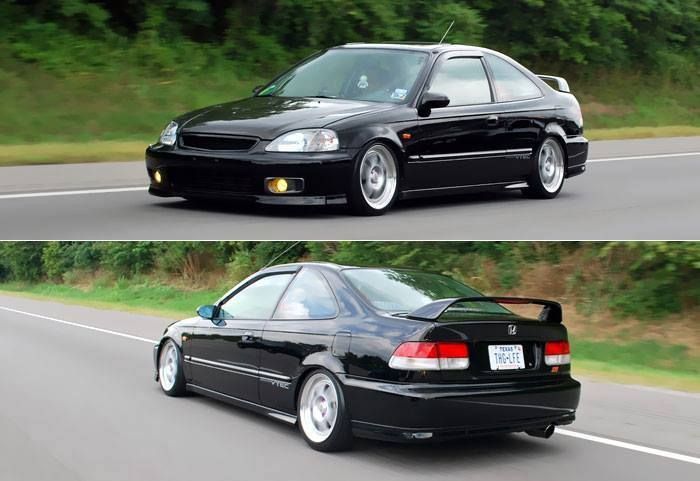

⬅ Back to Dashboard
C I V I C

The latest generation of the Civic Type R (FL5) is a global model, though subtle differences still exist for the JDM version, which is built in the UK and shipped back to Japan.
Interior: JDM versions of the FL5 come with an Alcantara steering wheel and suede-like rear seats, in contrast to the leather-wrapped wheel and cloth rear seats of the USDM model.
Features: JDM models also have unique features like parking sensors and power-folding side mirrors.